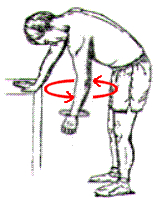

Tipos de ejercicios de hombro
Home
Category
Los 10 mejores ejercicios para tu entrenamiento de hombros
Los ejercicios básicos para tener unos hombros musculados .
Top 5 Mejores Ejercicios Para Hombros con Mancuernas + .
Ejercicios con el propio peso para hombros >> Los 5 mejores
Los mejores ejercicios de hombros según 5 expertos en . - GQ
Los mejores ejercicios para hombros que deberías practicar
Rutina de hombros | Los 4 mejores ejercicios para aumentar .
Ejercicios para entrenar los hombros en el gimnasio - Vitónica
Rutina de hombros | Los 4 mejores ejercicios para definir los .
▷ Mejores ejercicios para hombros: estimula sus 3 partes
Services
Privacy policy
Terms and Conditions
Photo gallery
<div class="mc_vtvc_th b_canvas"><div class="cico" style="width:234px;height:131px;"><div class="rms_iac" style="height:131px;line-height:131px;width:234px;" data-height="131" data-width="234" data-alt="4 tipos de ejercicios con la pierna ♡◇☆" data-role="presentation" data-class="rms_img" data-src="https://tse4.mm.bing.net/th?id=OVP.uCqk0koZkH6oAhhCqvkTsgHgFo" frameborder="0" allow="accelerometer; autoplay; encrypted-media; gyroscope; picture-in-picture" allowfullscreen>
Contact
2021.06.22 17:01
First Name
Last Name
Country
Germany
Italy
Spanish
Australia
Canada
USA
Subject
Los 10 mejores ejercicios para tu entrenamiento de hombros
Los ejercicios básicos para tener unos hombros musculados .
Top 5 Mejores Ejercicios Para Hombros con Mancuernas + .
Si estás buscando para trabajar y fortalecer los , sin tener que . De hecho, te puedo asegurar que la mecánica de este , .
Ejercicios con el propio peso para hombros >> Los 5 mejores
Los mejores ejercicios de hombros según 5 expertos en . - GQ
Los mejores ejercicios para hombros que deberías practicar
Rutina de hombros | Los 4 mejores ejercicios para aumentar .
Ejercicios para entrenar los hombros en el gimnasio - Vitónica
Rutina de hombros | Los 4 mejores ejercicios para definir los .
▷ Mejores ejercicios para hombros: estimula sus 3 partes
Featured Projects

Menu
Last Photo